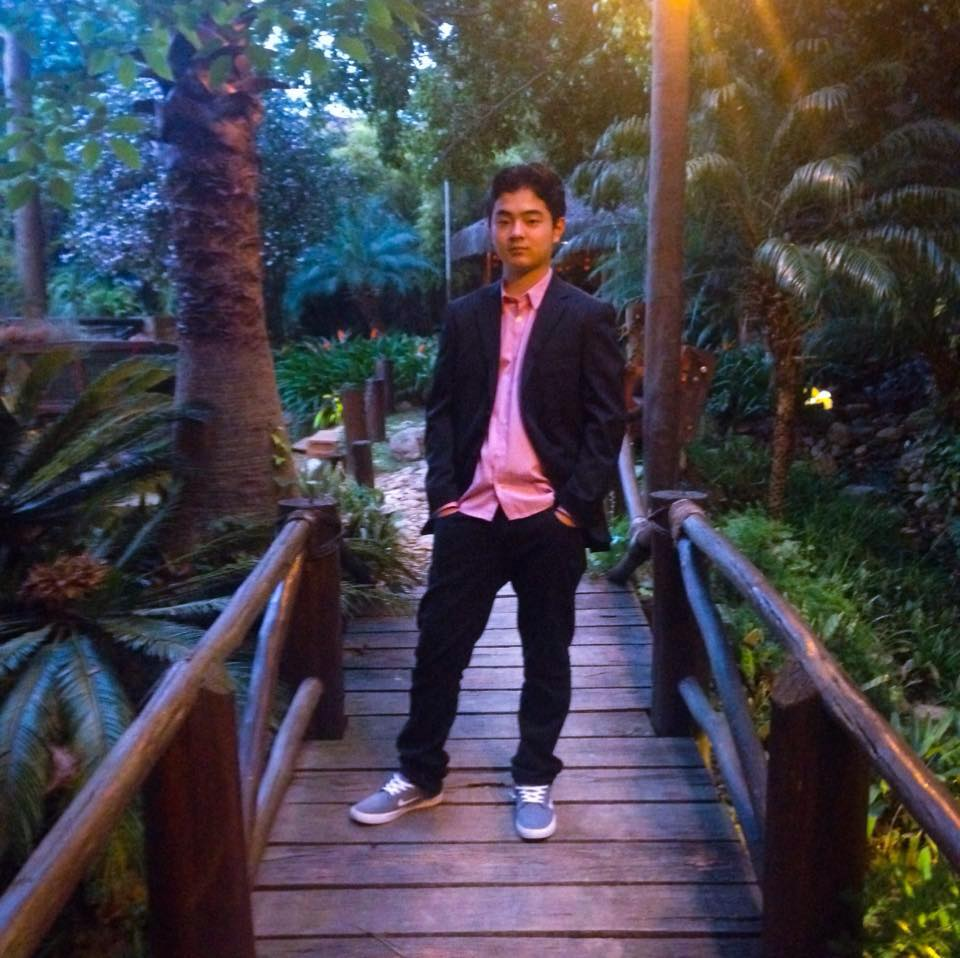

| Curriculo Pessoal |
|  |
E-mail: brunomtakano@gmail.com
|
| Nome Completo |
| Bruno Mitsuo Suzuki Takano |
| Resumo profissional |
|
• Excelente habilidade de aprendizado, determinado e proativo;
cursando terceiro ano de graduação em Análise de Sistemas; minhas experiências com tecnologia tiveram início na minha adolescência; no primeiro ano da faculdade, me destaquei na matéria de Gerenciamento de Projetos como líder de equipe; durante o período que prestei o serviço militar, recebi honra ao mérito por disciplina, destaque do mês e por não cometer nenhuma falta. |
| Home |
| Objetivo |
|
• Interesse na área de Gestão de Projetos,
buscando obter experiência com Banco de Dados e Business Intelligence (BI) e manutenção de informática; buscar oportunidade de crescimento profissional e pessoal, poder desenvolver minhas habilidades, compartilhar novas ideias na área da Tecnologia da Informação. |
| Home |
| Formação acadêmica |
|
• Cursando 3º ano - Análise de Sistemas;
• UNIFCV – Centro Universitário Cidade Verde – 2020; • Ensino médio – Escola Silvio Magalhães Barros - 2017; |
| Home |
| Experiências Anteriores |
|
• Atualmente – MGA Filmes
Inicio: 01/2019 – edição de fotos e filmagens de casamento, aniversário e eventos; atualização de site e redes sociais; atendimento de clientes nas solicitações de correção até aprovação final. • Serviço Militar – 2019. |
| Home |
| Curso Complementares |
|
• Nivelamento de Informática – UNIFCV 2019;
• Curso de Filmagem – FullTimeFilmamker 2019; • Primeiros socorros – Tiro de Guerra 2019; • Nivelamento de Português – UNIFCV 2018; • Prevenção de incêndio 2017; • Curso de Fotografia – Igreja Presbiteriana 2017; |
| Home |
| Informações adicionais. |
|
• Excelente habilidade de aprendizado;
• Conhecimento da linguagem de programação C++; • Conhecimento básico da linguagem de programação HTML; • Conhecimento básico da linguagem de programação Delphi; • Voluntário da Defesa Civil; • Líder de equipe na faculdade; • Destaque na matéria de gerência de projetos na faculdade; • Diploma de honra ao mérito no Tiro de Guerra; • Diploma de zero faltas no Tiro de Guerra; • Destaque do mês no Tiro de Guerra; • Voluntário para prestar o Serviço Militar; • Realizei trabalho voluntário como professor de adolescentes; • Realizei trabalho voluntário como professor de crianças; • Desenvolvo trabalho como fotografo na igreja; • Líder do departamento de mídia na igreja; • Doador de sangue voluntário; |
| Home |